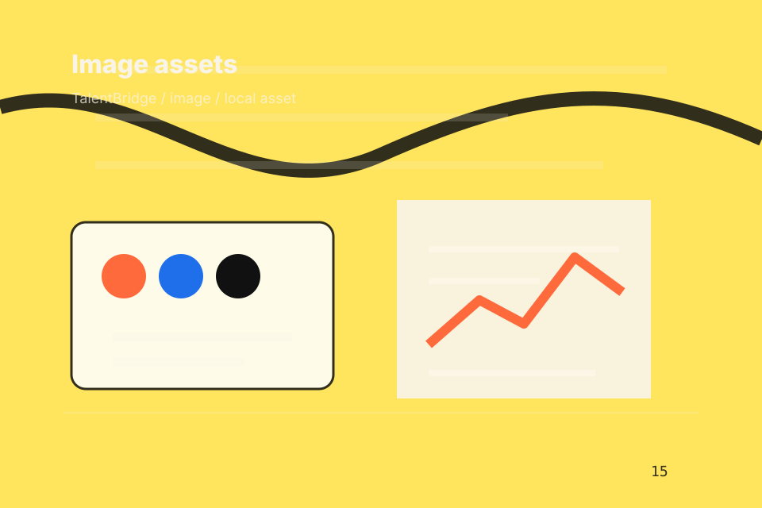

Home / 01
Talent
A recruitment magazine site with candidate/employer split, bold editorial cards, people proof, and upload routes
Home opens as a clear recruitment decision hub: what Talent offers, who it helps, why it matters, and which route to take first.
The first screen combines positioning, proof, primary action, and fast internal navigation, so people can act immediately or compare the rest of the home route with context.
Recruitment scopeCompare optionsRequest advice
Yellow job magazine hero
Choose the audience
Select the closest route and Talent keeps the next step, proof, and follow-up expectation aligned with matching confidence for two audiences.

Site atlas
Every route through Talent
This homepage is the working index for recruitment, hr & workplace services: it explains the offer, points to every deeper page, and keeps the final action visible without making the visitor hunt.
A recruitment magazine site with candidate/employer split, bold editorial cards, people proof, and upload routes. The page links problem, promise, services, process, proof, questions, support, legal routes, and conversion paths into one clear decision map.
Agency
Open the agency route for specialisms, values, team so recruitment, hr & workplace services visitors can compare context, proof, and next steps.
Open AgencyHiring
Open the hiring route for need, brief, search so recruitment, hr & workplace services visitors can compare context, proof, and next steps.
Open HiringTalent
Open the talent route for goal, opportunities, cv so recruitment, hr & workplace services visitors can compare context, proof, and next steps.
Open TalentServices
Open the services route for recruitment, hr, payroll so recruitment, hr & workplace services visitors can compare context, proof, and next steps.
Open ServicesProcess
Open the process route for brief, search, screen so recruitment, hr & workplace services visitors can compare context, proof, and next steps.
Open ProcessResults
Open the results route for placements, retention, speed so recruitment, hr & workplace services visitors can compare context, proof, and next steps.
Open ResultsPricing
Open the pricing route for contingency, retainer, project so recruitment, hr & workplace services visitors can compare context, proof, and next steps.
Open PricingInsights
Open the insights route for hiring, culture, leadership so recruitment, hr & workplace services visitors can compare context, proof, and next steps.
Open InsightsContact
Open the contact route for employers, candidates, partners so recruitment, hr & workplace services visitors can compare context, proof, and next steps.
Open ContactAsset System
Review the local assets, icons, OG images, and static handoff materials used by Talent.
Open Asset SystemSitemap
Use the full sitemap to recover any route and verify the whole Talent structure.
Open SitemapPrivacy
Read the privacy route before sending personal details through the static form.
Open PrivacyCookies
Manage consent and understand the privacy-safe analytics approach.
Open CookiesHome / 02
Workforce
Workforce adds professional context to the home route, using the editorial talent marketplace structure to support matching confidence for two audiences before visitors choose a next step.
Talent uses job story cards and focused copy to make the decision easier to scan, aligning the section with matching confidence for two audiences rather than filling space.
Open AgencyContext
Workforce gives the page a specific angle instead of repeating the navigation label.
Judgment
The job story cards show what to compare, what to avoid, and what matters most for recruitment, hr & workplace services visitors.
Direction
The final cue points to a useful internal route so the section keeps the journey moving.
Home / 03
Pressure
Pressure adds professional context to the home route, using the editorial talent marketplace structure to support matching confidence for two audiences before visitors choose a next step.
Talent uses job story cards and focused copy to make the decision easier to scan, aligning the section with matching confidence for two audiences rather than filling space.
Open HiringContext
Pressure gives the page a specific angle instead of repeating the navigation label.
Judgment
The job story cards show what to compare, what to avoid, and what matters most for recruitment, hr & workplace services visitors.
Direction
The final cue points to a useful internal route so the section keeps the journey moving.
Home / 04
Promise
Promise defines the better state Talent is built to create, with enough detail to make the promise believable.
A recruitment magazine site with candidate/employer split, bold editorial cards, people proof, and upload routes. The section grounds that direction in concrete benefits, visible tradeoffs, and a next route visitors can use when the promise feels relevant.
Open TalentBetter State
Promise defines what becomes clearer, easier, or safer when Talent is the chosen route.
Home / 05
Services
Services explains the practical scope, best-fit situations, and expected outcome so recruitment visitors can compare options without decoding jargon.
The section keeps the offer concrete: what is included, who it is best for, what decision it supports, and which linked route gives the deeper detail.
Open ServicesBest Fit
Who should use services and when it belongs in the home journey.
What Changes
The practical benefit visitors should expect after choosing this route.
Deeper Route
Where to compare details, pricing, support, or contact options before committing.
Yellow job magazine hero
Choose the audience
Select the closest route and Talent keeps the next step, proof, and follow-up expectation aligned with matching confidence for two audiences.
Home / 06
Process
Process explains the operating sequence so visitors can see how the first request becomes a clear recommendation and follow-up.
The steps are written from the visitor side: what they do first, what Talent clarifies, what they receive, and how support continues.
Open Process- 01
Start
How visitors begin this route and what detail is useful at the first step.
- 02
Clarify
What Talent reviews, filters, or explains before recommending the next move.
- 03
Continue
What the visitor receives afterward, including support, proof, or a handoff to the next page.
Home / 07
Results
Results shows what changes after the work: clearer decisions, visible progress, and proof points that connect the offer to real outcomes.
The layout connects before-and-after thinking with measured outcomes, making the result easy to scan without promising what the business cannot guarantee.
Open ResultsThe uncertainty, delay, or missed opportunity visitors bring into results.
The clearer, safer, or more valuable state Talent is designed to support.
The visible cue that connects results to a believable decision, not a loose claim.
Home / 08
Reviews
Reviews converts customer proof into a useful buying signal: the problem, the experience, and what changed afterward.
Proof stays believable by focusing on situation, service experience, and practical change rather than vague praise or unsupported results.
Open ResultsSituation
What the visitor needed before choosing Talent, written with enough context to feel real.
Experience
How the service, product, or support felt during the process, not just that it was good.
Change
What became easier to decide, complete, buy, book, or trust after the interaction.
Home / 09
Questions
Questions handles buying doubts directly so visitors can understand timing, fit, limits, and the safest next step.
Answers are short by design: enough to remove hesitation, not so much that the page turns into documentation before the visitor can act.
Open ContactQuestion
Questions gives the page a specific angle instead of repeating the navigation label.
Answer
The job story cards show what to compare, what to avoid, and what matters most for recruitment, hr & workplace services visitors.
Next Step
The final cue points to a useful internal route so the section keeps the journey moving.
What happens first?
Talent starts with a focused intake so the recommendation matches the visitor's context, risk, timing, and readiness.
How is scope kept clear?
Each route explains inclusions, exclusions, documents, timing, and the decision points that affect final delivery.
How is this site different?
The theme uses editorial talent marketplace, job story cards, and employer/candidate toggle, role filter, upload cv flow rather than a shared template rhythm.
Yellow job magazine hero
Choose the audience
Select the closest route and Talent keeps the next step, proof, and follow-up expectation aligned with matching confidence for two audiences.
Notes
Information is provided for planning and should be reviewed for the final client, location, and operating rules.